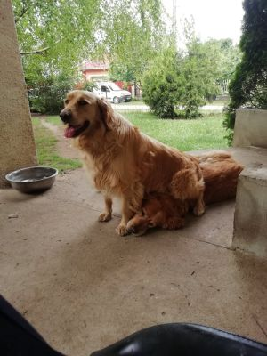
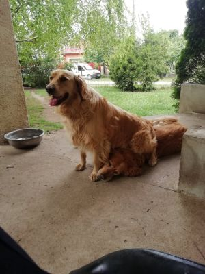

Háziállatok
Az idősebbik kutyánk a Sunny. Ő már 11 éves, ez érződik is rajta, mivel már nem olyan szaladgálós, mint régen. Ritkán azért még felpörög, de akkor se erőlteti meg magát. A kis kutya még csak 4 éves, de ő teljesen olyan, mintha még 1 éves lenne. Ő sajnos félig vak, de szerencsére ez semmiben nem akadályozza meg. Imád labdázni, folyton dobálni kell neki, mert ha nem akkor addig ugat (hisztizik), amíg nem az van amit ő akar. Néha amikor már sokadszorra rászólunk, hogy hagyja abba és nem hallgat ránk, akkor Sunny segít és megneveli. Nagyon szeretik egymást, mindig együtt alszanak, meg ha a másikat elvisszük például orvoshoz, akkor teljesen kétségbe esnek, hogy hova visszük a másikat.
| Megnevezés | Sunny | Frankie |
|---|---|---|
| Kor | 11éves | 5éves |
| Súly | 38kg | 36kg |
| Szín | Mélyarany | Középarany |
| Hobbi | Sztoicizmus | Labda, labda ,labda |